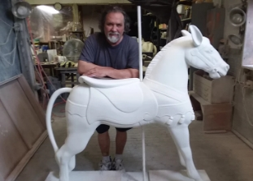

Juan Andreu
Master Carver
Juan Andreu holds a Master of Fine Arts degree from the University of Valencia, School of Fine Arts, in Spain, where he specialized in classic sculpture in wood, bronze and stone mediums. He has also studied architectural design, painting and restoration and is presently a doctoral candidate in the area of Fine Arts. The artist studio of Juan Andreu is located in the New England Carousel Museum. It is opened to the public by appointment.